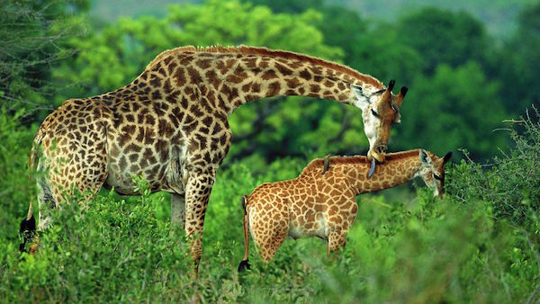

GIRAFFE
Giraffes are the tallest living land animals in the world. They are famous for their extremely long necks, long legs and unique spotted patterns.
Giraffes are herbivores and mainly eat leaves from trees and bushes. Their long necks and tongues help them reach food that many other animals cannot.
Each giraffe has a unique pattern of spots. They also have small horns called ossicones on top of their heads.
WHERE WILL YOU FIND THEM
The giraffes are in the lower right of the park, in the enclosure with the yellow path, just below the amphitheatre.